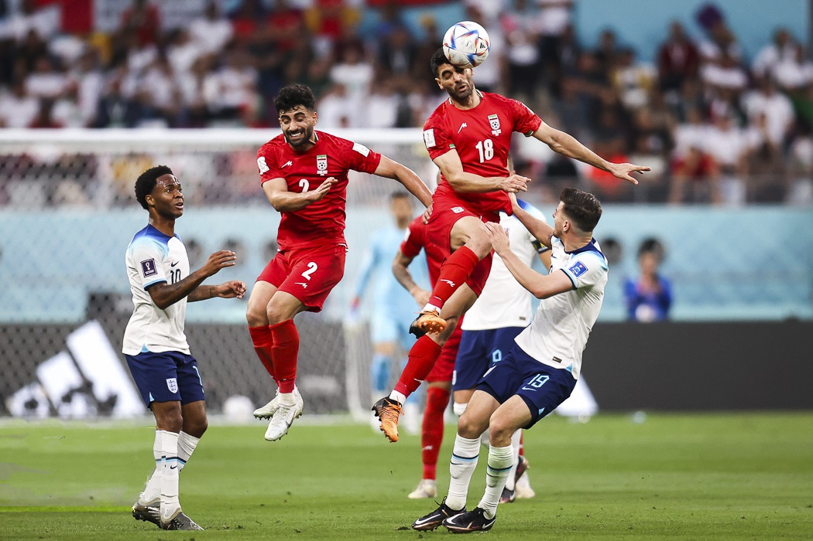
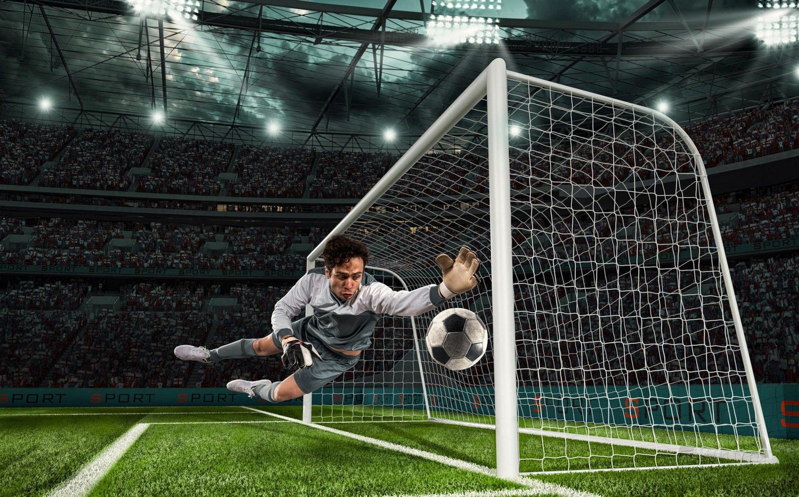

Why Soccer Is the World's Most Popular Sport
The World's Most Popular Sport
Have you ever wondered why soccer is the world's most popular sport? Today, more than 3.5 billion people around the globe consider themselves soccer fans, and that number keeps growing every year. From small villages to huge cities, people of every background share a passion for this game. So what makes soccer so special? It comes down to three main reasons: it's simple, it's exciting, and it brings people closer together, no matter where they live.
A Simple Game Anyone Can Play
First, soccer is incredibly easy to play, and that's a huge part of its appeal. All you really need is a ball and a bit of open space — you don't need expensive equipment, a fancy uniform, or a huge budget to get started. Kids kick a ball around in dusty streets, on sandy beaches, and in city parks all over the world. You don't have to be tall, big, or unusually strong to enjoy the game; players of almost any size and shape can find success on the field. Even the rules are refreshingly simple: get the ball into the goal, and don't touch it with your hands. This accessibility is exactly why soccer has become such a universal pastime.
Nail-Biting Excitement

Second, soccer is thrilling to watch, and that keeps millions of fans glued to their screens. Because so few goals are scored in a typical match, every single one feels monumental — a single goal can completely change the outcome of a game. Watching skilled players traverse the field, weaving past defenders with speed and control, is genuinely mesmerizing. Matches often stay close until the very last minute, and there's nothing quite like watching your favorite team mount a comeback and steal a dramatic victory in the closing seconds. This constant unpredictability is part of what makes soccer such a captivating sport to follow.
Bringing People Together
Third, soccer brings people together like almost no other sport on Earth. The FIFA World Cup, held every four years, is widely considered the biggest sporting event in the world, drawing viewers from nearly every country. Nearly 1.5 billion people tune in to watch the final match every year, proving just how much the sport can unite total strangers around a shared goal. When a national team takes the field, daily life in many countries seems to pause; offices empty out, families gather around televisions, and entire neighborhoods erupt into cheers with every goal. When their team wins, fans pour into the streets to celebrate together, turning a simple game into a moment of national pride.
A Game for Everyone

In conclusion, soccer has earned its place as the world's most popular sport because it's easy to play, thrilling to watch, and powerful enough to bring entire communities together. Whether you're rich or poor, young or old, soccer offers a way to connect, compete, and belong. It doesn't matter what language you speak or where you were born — once the whistle blows, everyone understands the same rulebook. That's why billions of people around the world continue to love this wonderful game, generation after generation.